é
densa5 .
Para resolver o sistema, podemos transformar a matriz 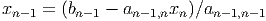 nas matrizes 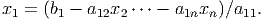,
triangular inferior, e 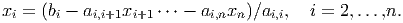, triangular superior de tal forma que 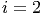.
é
densa5 .
Para resolver o sistema, podemos transformar a matriz 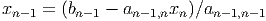 nas matrizes 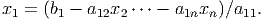,
triangular inferior, e 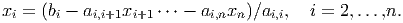, triangular superior de tal forma que 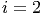.
Considere um sistema linear onde a matriz é
densa5 .
Para resolver o sistema, podemos transformar a matriz 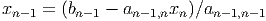 nas matrizes 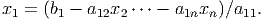,
triangular inferior, e 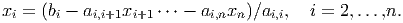, triangular superior de tal forma que 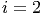.
Sendo assim o sistema pode ser reescrito tal que
A matriz 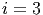 da fatoração6
 é a matriz obtida ao final do escalonamento da matriz 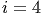.
é a matriz obtida ao final do escalonamento da matriz 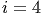.
A matriz 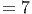 inicia igual a identidade 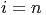. Os elementos da matriz  são os
múltiplos do primeiro elemento da linha de 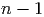 a ser zerado dividido pelo pivô
acima na mesma coluna.
são os
múltiplos do primeiro elemento da linha de 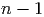 a ser zerado dividido pelo pivô
acima na mesma coluna.
Por exemplo, para zerar o primeiro elemento da segunda linha de 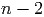, calculamos
Note que usaremos 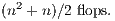 para nos referenciarmos a linha 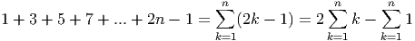 de 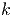. Da mesma forma, se necessário usaremos 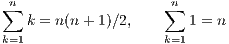 para nos referenciarmos a linha 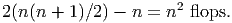 de 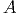.
Para zerar o primeiro elemento da terceira linha de  , temos
, temos


 .
.
Repetimos o processo para as próximas colunas, escalonando
a matriz  e coletando os elementos 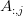 abaixo da
diagonal7 .
e coletando os elementos 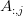 abaixo da
diagonal7 .
O algoritmo para fatoração 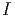 pode ser escrito como
Podemos analisar o custo computacional reduzindo o problema em problemas menores.
Na linha 4, iniciamos com 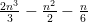. Desta forma  varia de 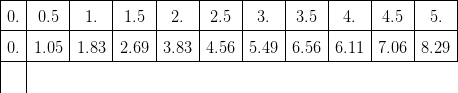 até 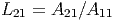 na linha
5.
varia de 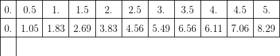 até 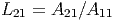 na linha
5.
A linha 6 terá sempre 1 flop.
A linha 7, com 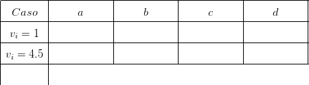 tem um bloco de tamanho 2:n contabilizando 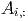 flops do produto e 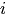 flops da subtração.
Nas linhas 6-8 são feitas 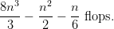 flops independente do valor de 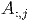. Como 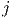 varia de 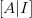 até 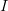, teremos que o bloco é repetido 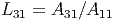 vezes, ou seja, o custo das linhas 5-9 é
|
| (4.21) |
Voltamos a linha 4 quando  . Das linhas 6-8 teremos
. Das linhas 6-8 teremos  flops (o
bloco terá um elemento a menos) que será repetido 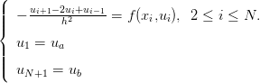 vezes, pois i=3:n, ou
seja,
flops (o
bloco terá um elemento a menos) que será repetido 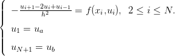 vezes, pois i=3:n, ou
seja,
|
| (4.22) |
Para 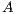, temos 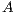.
Para 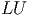, temos 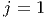.
Finalmente, para 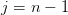, temos 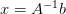.
Somando todos esses custos, temos

Para calcularmos o custo computacional de um algoritmo completo, uma estratégia é separar o algoritmo em partes menores mais fáceis de calcular.
Para resolver o sistema, devemos primeiro fatorar a matriz 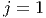 nas matrizes 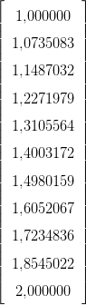 e 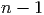. Vimos que o custo é
Depois devemos resolver os sistemas 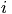 e  . O custo de resolver
os dois sistemas é (devemos contar duas vezes)
. O custo de resolver
os dois sistemas é (devemos contar duas vezes)
Somando esses 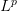 custos, temos que o custo para resolver um sistema linear usando fatoração 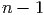 é
Quando cresce, prevalessem os termos de mais alta ordem, ou seja,
Devemos apenas multiplicar pelo custo de resolver um sistema linear usando fatoração , ou seja, o custo será
Porém, se estivermos resolvendo sistemas com a mesma matriz (e diferente lado direito para cada sistema) podemos fazer a fatoração LU uma única vez e contar apenas o custo de resolver os sistemas triangulares obtidos.
Custo para fatoração LU de : .
Custo para resolver sistemas triangulares inferiores: .
Custo para resolver sistemas triangulares superiores:  .
.
Somando esses custos obtemos
Como vemos em Álgebra Linear, um método para obter a matriz é realizar
o escalonamento da matriz ![[A|I]](main2149x.png) onde é a matriz identidade. Ao terminar o
escalonamento, o bloco do lado direito conterá .
onde é a matriz identidade. Ao terminar o
escalonamento, o bloco do lado direito conterá .
Isto é equivalente a resolver sistemas lineares com a mesma matriz e os vetores da base canônica tal que
 inversa, já que .
inversa, já que .
O custo para resolver esses sistemas lineares foi calculado na seção anterior como